Cónicas y curvas cuadráticas
Capítulo 4 · Parte I. Fundamentos: de los reales a la geometría
Las parábolas, elipses e hipérbolas se describen mediante condiciones geométricas que conducen a ecuaciones. Las traslaciones, la completación de cuadrados y el discriminante permiten interpretar dichas ecuaciones.
Grabaciones de referencia: grabación de la cátedra 4.1, grabación de la cátedra 4.2.
Procedencia de este tramo: cátedra 4.1.
Cónicas: foco, directriz y excentricidad
Lugar geométrico asociado a una razón de distancias
En la cátedra (09:59–13:30). Se fija una recta \(d\) del plano, denominada directriz, un punto \(F\) exterior a dicha recta, denominado foco, y un real \(e>0\), denominado excentricidad. La cónica correspondiente es el lugar geométrico
\[ \boxed{\mathcal C(F,d,e)=\{P\in\mathbb R^2: d(P,F)=e\,d(P,d)\}.} \]
Aquí \(d(P,F)\) representa la distancia euclidiana entre dos puntos, mientras que \(d(P,d)\) es la distancia perpendicular desde \(P\) a la recta \(d\). La igualdad describe todos los puntos para los que la razón entre las distancias al foco y a la directriz vale \(e\). El requisito \(F\notin d\) hace que el foco y la recta fijen una configuración geométrica bien determinada.
El profesor menciona también \(e=0\): la igualdad se reduce a \(d(P,F)=0\), cuyo lugar es el punto \(\{F\}\). En estas notas, siguiendo la convención de la clase, trabajamos con \(e>0\).
Los tres casos de la excentricidad
| Excentricidad | Nombre del lugar | Lectura de las distancias |
|---|---|---|
| \(0<e<1\) | Elipse | \(d(P,F)<d(P,d)\) para cada punto del lugar. |
| \(e=1\) | Parábola | \(d(P,F)=d(P,d)\). |
| \(e>1\) | Hipérbola | \(d(P,F)>d(P,d)\). |
La clase se concentra en \(e=1\). El desarrollo formal de la elipse y de la hipérbola queda anunciado para el viernes de la semana 4. Esta clasificación procede de la definición mediante foco y directriz que utiliza el docente.
El vértice y la elección de coordenadas
Vértice: el punto de equidistancia sobre el eje focal
En la cátedra (18:02–21:44). Sea \(F'\) la proyección perpendicular del foco \(F\) sobre la directriz. En el segmento \(FF'\) existe un punto que dista lo mismo de \(F\) que de \(F'\): su punto medio \(V\). Como \(d(V,d)=d(V,F')\) y \(d(V,F)=d(V,F')\), el punto \(V\) pertenece a la parábola. Recibe el nombre de vértice.
El segmento \(FF'\) fija asimismo una recta, perpendicular a la directriz, que constituye el eje de simetría. Elegir el origen en \(V\) y uno de los ejes coordenados sobre esa recta simplifica la ecuación y hace visible su geometría.
Normalización horizontal
Colocamos el vértice en \(O=(0,0)\) y el eje focal sobre el eje \(x\). Escribimos
\[ \boxed{F=(p,0),\qquad d:\ x=-p,\qquad p\in\mathbb R\setminus\{0\}.} \]
La condición \(p\ne0\) expresa que el foco se encuentra a distancia \(|p|\) del vértice. El pie de la perpendicular desde \(F\) a la directriz es \(F'=(-p,0)\), cuyo punto medio con \(F\) es efectivamente el origen. Para \(p>0\) el foco está a la derecha del vértice; para \(p<0\) está a la izquierda. En ambos casos las distancias \(d(O,F)\) y \(d(O,d)\) valen \(|p|\).
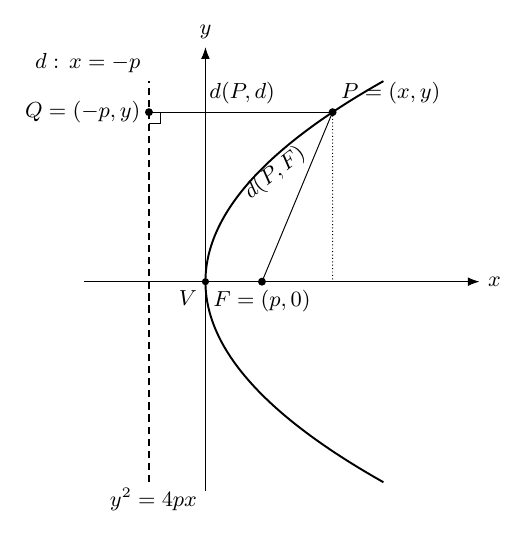
Figura 1. El punto \(P=(x,y)\) tiene la misma distancia al foco \(F=(p,0)\) que a su proyección \(Q=(-p,y)\) sobre la directriz. Se ilustra el caso \(p>0\).
Deducción de la ecuación canónica
Demostración de la cátedra (26:24–33:12), reconstruida. Sea \(P=(x,y)\). La igualdad de distancias que define la parábola es
\[ d(P,F)=d(P,d). \]
Para determinar la distancia a la recta \(d:x=-p\), tomamos \(Q=(-p,y)\), el pie de la perpendicular a la directriz. Por la fórmula de Pitágoras y la igualdad de las ordenadas de \(P\) y \(Q\),
\[ \begin{aligned} d(P,F)^2&=(x-p)^2+y^2,\\ d(P,d)^2=d(P,Q)^2&=(x+p)^2. \end{aligned} \]
Las dos distancias son reales mayores o iguales que cero. Por consiguiente, la igualdad entre ellas equivale a la igualdad entre sus cuadrados. Sustituyendo y desarrollando,
\[ \begin{aligned} d(P,F)=d(P,d) &\iff (x-p)^2+y^2=(x+p)^2\\ &\iff x^2-2px+p^2+y^2=x^2+2px+p^2\\ &\iff y^2=4px. \end{aligned} \]
Todos los pasos son equivalencias algebraicas válidas, y el paso de las distancias a los cuadrados preserva la equivalencia porque ambas son no negativas. Queda así probado el resultado en ambos sentidos:
\[ \boxed{P=(x,y)\in\mathcal P\iff y^2=4px,\quad p\ne0.} \]
El parámetro \(p\) tiene significado geométrico: la distancia del vértice al foco, y también del vértice a la directriz, es \(|p|\). La fórmula \(y^2=4px\) es la ecuación canónica de la parábola de eje horizontal con vértice en el origen.
La geometría contenida en la ecuación
Región donde se encuentra la parábola
En la cátedra (37:00–40:54). Todo cuadrado es mayor o igual que cero. Si \((x,y)\) satisface \(y^2=4px\), entonces \(4px\ge0\). Como \(4>0\), la posición de cada punto depende del signo de \(p\):
\[ \begin{cases} p>0\ \Longrightarrow\ x\ge0,\\ p<0\ \Longrightarrow\ x\le0. \end{cases} \]
De este modo, la parábola se abre hacia la derecha cuando \(p>0\) y hacia la izquierda cuando \(p<0\). El vértice \((0,0)\) pertenece a ambas configuraciones; para \(x=0\), la ecuación exige \(y=0\).
Simetría respecto del eje horizontal
En la cátedra (41:30–46:59). Si \((x_0,y_0)\) pertenece a la parábola, \(y_0^2=4px_0\). Como \((-y_0)^2=y_0^2\), también \((x_0,-y_0)\) pertenece. La transformación
\[ (x,y)\longmapsto(x,-y) \]
conserva el lugar geométrico; es la reflexión respecto del eje de las abscisas. Por tanto, el eje \(x\) es eje de simetría de \(y^2=4px\).
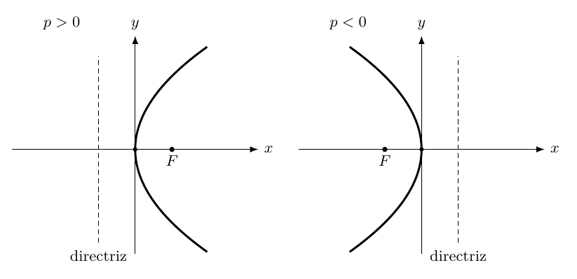
Figura 2. El signo de \(p\) determina el sentido de apertura; ambos lugares tienen vértice en el origen y simetría respecto del eje \(x\).
Crecimiento de una rama y forma del gráfico
En la cátedra (56:59–1:02:24). Si \(p>0\), en el primer cuadrante el parámetro \(y\) es positivo y la ecuación puede expresarse como
\[ y=\sqrt{4px}=2\sqrt{px}. \]
Consideremos \(0\le x_1<x_2\) y las alturas correspondientes \(y_1,y_2\ge0\). Entonces \(4px_1<4px_2\), de donde \(y_1^2<y_2^2\). Como la función cuadrado preserva el orden de los números no negativos, \(y_1<y_2\). La rama superior crece cuando avanzamos hacia la derecha. La inferior es su reflejo respecto del eje horizontal.
El docente propone un argumento adicional mediante las intersecciones con rectas, que desarrollamos en la sección siguiente. Dicho argumento establece una cota de dos puntos de corte y permite descartar los dibujos oscilatorios considerados provisionalmente en la pizarra.
Intersecciones con rectas: a lo sumo dos puntos
Una recta no vertical
En la cátedra (49:22–55:55). Para estudiar las intersecciones con una recta \(r:y=mx+n\), sustituimos su ecuación en \(y^2=4px\):
\[ (mx+n)^2=4px. \]
Al desarrollar y ordenar se obtiene la ecuación en \(x\)
\[ \boxed{m^2x^2+(2mn-4p)x+n^2=0.}\tag{I} \]
Si \(m=0\), la recta es horizontal: \(y=n\). La ecuación (I) se convierte en \(-4px+n^2=0\). Como \(p\ne0\), tiene una única solución,
\[ \boxed{(x,y)=\left(\frac{n^2}{4p},n\right).} \]
Si \(m\ne0\), el coeficiente de \(x^2\) es \(m^2>0\) y la ecuación es cuadrática. Su discriminante decide el número de soluciones reales: cero, una o dos. Cada raíz \(x\) determina un único valor \(y=mx+n\). Por ello, una recta de pendiente finita intersecta la parábola en a lo sumo dos puntos.
Una recta vertical — ampliación editorial
Para cubrir todas las rectas del plano consideremos \(x=c\). Sustituyendo en la parábola,
\[ y^2=4pc. \]
Si \(pc>0\), hay dos puntos \((c,\pm2\sqrt{pc})\); si \(c=0\), el único punto de corte es el vértice; si \(pc<0\), el conjunto de cortes es vacío. Así, las rectas verticales también tienen a lo sumo dos intersecciones. La prueba completa incluye, por tanto, toda recta del plano, horizontal, oblicua o vertical.
La cátedra utiliza esta restricción de intersecciones para explicar la forma regular de la parábola. La conclusión formal que hemos demostrado es la cota de cardinalidad de las intersecciones; la descripción de una curva «sin oscilaciones» es su interpretación geométrica en la exposición.
El discriminante y las tangentes
La clasificación por el discriminante
En la cátedra (1:10:55–1:17:45). Supongamos ahora \(m\ne0\). Para la ecuación (I), el discriminante es
\[ \begin{aligned} \Delta &=(2mn-4p)^2-4m^2n^2\\ &=4m^2n^2-16mnp+16p^2-4m^2n^2\\ &=\boxed{16p(p-mn)}. \end{aligned} \]
| Condición | Intersección de la recta con la parábola |
|---|---|
| \(p(p-mn)>0\) | Dos puntos distintos: secante. |
| \(p(p-mn)=0\) | Un punto con raíz cuadrática doble: tangente. |
| \(p(p-mn)<0\) | Conjunto vacío: recta exterior. |
Como \(p\ne0\), la condición de tangencia se reduce a
\[ \boxed{mn=p.} \]
Esta condición relaciona la pendiente \(m\) con la ordenada al origen \(n\). Es válida para todo \(p\ne0\); si \(m\ne0\), equivale a \(n=p/m\). La familia de tangentes con pendiente finita queda expresada por
\[ \boxed{y=mx+\frac{p}{m},\qquad m\ne0.}\tag{T1} \]
Precisión de signos. La clasificación de intersecciones se hace con el signo de \(p(p-mn)\), de modo que funciona para \(p>0\) y \(p<0\). Al despejar \(n\) mediante una desigualdad, debe examinarse además el signo de \(m\).
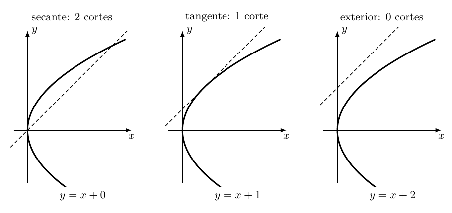
Figura 3. Tres rectas de pendiente \(m=1\) con interceptos \(n=0\), \(n=1\) y \(n=2\), respectivamente; su discriminante es positivo, cero o negativo.
Coordenadas del punto de tangencia
En la cátedra (1:17:50–1:24:50). Bajo la condición \(mn=p\), la raíz doble de la ecuación (I) es
\[ \begin{aligned} x_0&=-\frac{2mn-4p}{2m^2} =\frac{4p-2p}{2m^2} =\boxed{\frac{p}{m^2}},\\ y_0&=mx_0+\frac pm =\frac pm+\frac pm =\boxed{\frac{2p}{m}}. \end{aligned} \]
La identidad \(m=y_0/(2x_0)\) se obtiene sustituyendo las fórmulas anteriores, porque en esta sección \(x_0\ne0\). Equivalentemente, \(m=2p/y_0\).
Con \(x_0=p/m^2\) se tiene \(p/m=mx_0\). Reescribimos (T1) como \(y=m(x+x_0)\) y luego sustituimos \(m=2p/y_0\):
\[ \boxed{yy_0=2p(x+x_0).}\tag{T2} \]
Esta es la ecuación de la tangente en el punto \((x_0,y_0)\) de la parábola. Se obtiene en la clase mediante el discriminante, antes de disponer de derivadas.
La tangente en el vértice — precisión editorial
La deducción mediante una pendiente finita utiliza \(m\ne0\) y \(y_0\ne0\) para dividir. La fórmula final (T2), sin embargo, también puede evaluarse en el vértice \((x_0,y_0)=(0,0)\):
\[ 0=2px \quad\Longleftrightarrow\quad\boxed{x=0}\qquad(p\ne0). \]
Esta recta vertical es la tangente en el vértice. La justificación algebraica es exacta: la intersección de \(x=0\) con \(y^2=4px\) se reduce a \(y^2=0\), raíz doble \(y=0\). Por ello, la ecuación desdoblada extiende correctamente el resultado a un caso que la parametrización por \(m\) deja pendiente.
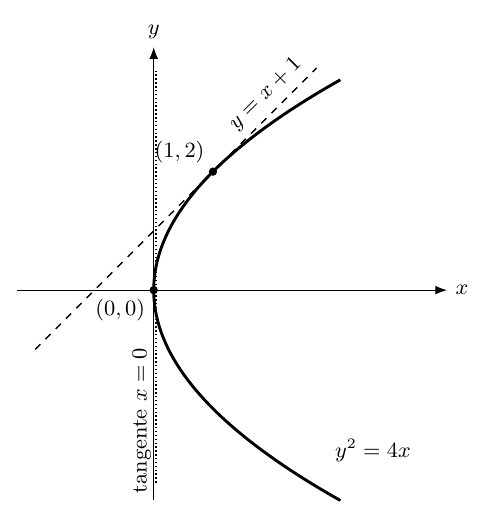
Figura 4. Tangente \(y=x+1\) en \((1,2)\) para \(y^2=4x\) y tangente vertical \(x=0\) en el vértice.
La «desdoblada» de una ecuación cuadrática
Regla introducida en la cátedra
En la cátedra (1:26:58–1:35:37). El profesor llama desdoblada a una transformación de la ecuación de una curva cuadrática en una ecuación lineal, relativa a un punto \((x_0,y_0)\) de la curva. Para los términos que aparecen en la exposición:
\[ \begin{aligned} x^2&\ \longmapsto\ xx_0,\\ y^2&\ \longmapsto\ yy_0,\\ x&\ \longmapsto\ \frac{x+x_0}{2},\\ y&\ \longmapsto\ \frac{y+y_0}{2},\\ \text{constantes}&\ \longmapsto\ \text{las mismas constantes}. \end{aligned} \]
Por ejemplo, la parábola \(y^2=4px\) produce
\[ \boxed{yy_0=4p\frac{x+x_0}{2}=2p(x+x_0),} \]
exactamente la tangente (T2). El punto \((x_0,y_0)\) satisface siempre la ecuación de la parábola.
Para la circunferencia con centro en el origen, \(x^2+y^2=r^2\), la desdoblada es
\[ \boxed{xx_0+yy_0=r^2}, \]
la tangente en un punto \((x_0,y_0)\) de esa circunferencia. Asimismo, la circunferencia \(x^2+y^2-2x=0\) produce
\[ xx_0+yy_0-(x+x_0)=0. \]
Cuando se aplica a la ecuación \(ax+by+c=0\) de una recta y se simplifica utilizando que \((x_0,y_0)\) pertenece a ella, se recupera la propia recta.
La fórmula completa y su justificación — ampliación editorial
Para una ecuación cuadrática general, incluidos los términos mixtos,
\[ F(x,y)=Ax^2+Bxy+Cy^2+Dx+Ey+G=0, \]
la desdoblada relativa a un punto \((x_0,y_0)\) del lugar es
\[ \boxed{ Axx_0+\frac B2(xy_0+x_0y)+Cyy_0+ \frac D2(x+x_0)+\frac E2(y+y_0)+G=0. } \]
Esta regla se obtiene al polarizar cada término de la expresión cuadrática. Su conexión con la recta tangente puede comprobarse directamente mediante la linealización algebraica. Como \(F(x_0,y_0)=0\), al multiplicar la fórmula desdoblada por \(2\) y agrupar términos queda
\[ F_x(x_0,y_0)(x-x_0)+F_y(x_0,y_0)(y-y_0)=0, \]
con \(F_x=2Ax+By+D\) y \(F_y=Bx+2Cy+E\). Aquí se presentan estas expresiones como identidades polinómicas; el curso explicará su interpretación mediante derivadas más adelante.
Si \((F_x(x_0,y_0),F_y(x_0,y_0))\ne(0,0)\), la ecuación representa una recta tangente bien determinada. La condición caracteriza un punto regular del lugar. Una ecuación cuadrática degenerada puede presentar puntos singulares que requieren un análisis adicional; por eso las notas especifican la hipótesis de regularidad al generalizar la regla.
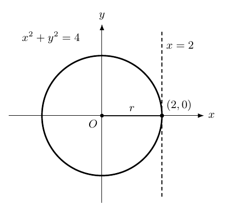
Figura 5. En \(x^2+y^2=4\), la desdoblada en \((2,0)\) es \(2x=4\), esto es, la tangente \(x=2\).
La parábola de eje vertical
En la cátedra (1:35:37–1:42:13). Intercambiar las funciones de \(x\) y \(y\) en la construcción anterior conduce a
\[ \boxed{x^2=4py,\qquad p\ne0,} \]
cuya geometría se caracteriza por
\[ F=(0,p),\qquad d:\ y=-p,\qquad V=(0,0). \]
El eje de simetría es el eje \(y\). Para \(p>0\) los puntos cumplen \(y\ge0\) y la parábola se abre hacia arriba; para \(p<0\) cumplen \(y\le0\) y se abre hacia abajo.
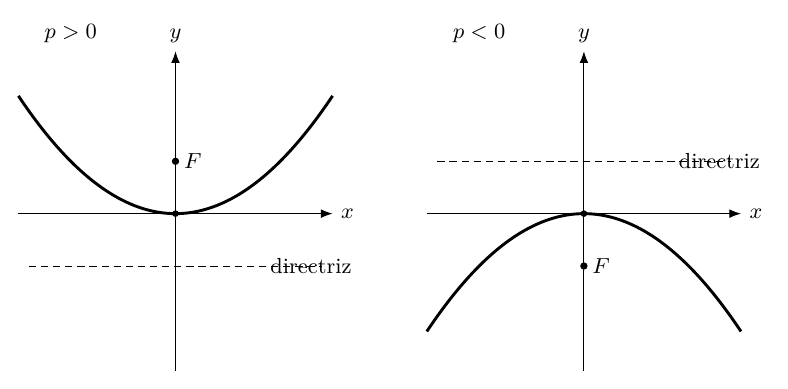
Figura 6. En \(x^2=4py\) el signo de \(p\) determina la apertura superior o inferior; el eje \(y\) es eje de simetría.
La desdoblada de \(x^2=4py\) en \((x_0,y_0)\) es
\[ \boxed{xx_0=2p(y+y_0),} \]
que también incluye la tangente horizontal en su vértice: si \((x_0,y_0)=(0,0)\), la ecuación se reduce a \(y=0\).
Ejemplos numéricos de la clase. Para \(x^2=y\) se tiene \(4p=1\), luego \(p=1/4\) y \(F=(0,1/4)\). Para \(y=5x^2\) se escribe \(x^2=\tfrac15y=4(\tfrac1{20})y\); por tanto \(p=1/20\). El profesor anuncia que la clase siguiente estudiará traslaciones y parábolas con vértice arbitrario. La forma
\[ (x-h)^2=4p(y-k) \]
con vértice \((h,k)\) se registra aquí únicamente como anticipo editorial de ese próximo desarrollo.
Procedencia de este tramo: cátedra 4.2.
Las parábolas canónicas y el signo de sus parámetros
Apertura horizontal
En la cátedra (03:09–05:10). Para \(p\in\mathbb R\setminus\{0\}\), la ecuación
\[ \boxed{y^2=4px} \]
describe la parábola de vértice \(V=(0,0)\), foco \(F=(p,0)\) y directriz \(x=-p\). Su eje de simetría es el eje \(x\). Si \(p>0\) se abre hacia la derecha; si \(p<0\), hacia la izquierda. La distancia del vértice al foco es \(|p|\). La condición \(p\ne0\) mantiene separados el foco y la directriz. Al sustituir \(p=0\), la ecuación se convierte en \(y^2=0\), que describe la recta \(y=0\).
Apertura vertical y la constante \(a\)
En la cátedra (05:10–12:40). Intercambiar el papel de las coordenadas produce
\[ \boxed{x^2=4py,\qquad F=(0,p),\qquad d:\ y=-p.} \]
Al despejar \(y\) se obtiene \(y=ax^2\), con
\[ \boxed{a=\frac{1}{4p},\qquad p=\frac{1}{4a},\qquad a\ne0.} \]
El signo de \(a\) coincide con el de \(p\): una parábola con \(a>0\) se abre hacia arriba y una con \(a<0\) hacia abajo. En ambos casos el foco conserva las coordenadas \((0,1/(4a))\), y la directriz tiene ecuación \(y=-1/(4a)\). Por ejemplo, para \(y=x^2\), \(a=1\) y \(p=1/4\).
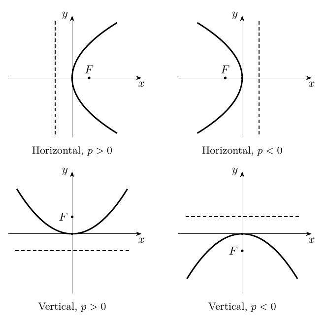
Figura 1. Cuatro aperturas canónicas: cada foco se sitúa en el sentido de apertura de la parábola. Se ilustran parámetros de igual magnitud y signos opuestos.
Una traslación cambia el origen de las coordenadas
Dos sistemas para un mismo punto
En la cátedra (13:09–23:17). La parábola \(y'=a(x')^2\) está escrita en un sistema cuyo origen coincide con su vértice. Si ese vértice tiene coordenadas globales \(V=(x_0,y_0)\), un mismo punto \(P=(x,y)\) tiene coordenadas locales
\[ \boxed{x'=x-x_0,\qquad y'=y-y_0.} \]
La primera diferencia mide el desplazamiento horizontal de \(P\) respecto de \(V\); la segunda mide el desplazamiento vertical. Ambas son cantidades orientadas, por lo que conservan su signo. Sustituyendo las dos coordenadas locales en la ecuación conocida, obtenemos
\[ \boxed{y-y_0=a(x-x_0)^2.}\tag{1} \]
Este es el modelo canónico de una parábola vertical trasladada: el vértice es \((x_0,y_0)\) y el eje de simetría es la recta \(x=x_0\). La constante \(a\) regula el sentido de apertura y la escala de la curva. El desplazamiento modifica la posición del vértice y conserva la forma geométrica.
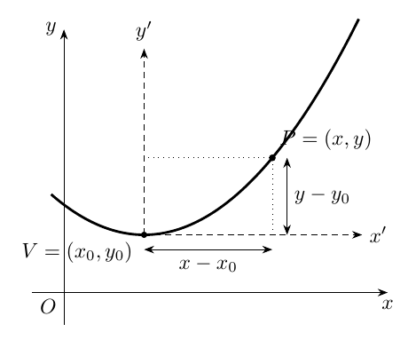
Figura 2. El punto de coordenadas globales \((x,y)\) tiene coordenadas locales \((x-x_0,y-y_0)\) respecto del origen trasladado \(V=(x_0,y_0)\).
Foco y directriz después de la traslación
En la cátedra (27:52–30:16). En el sistema local el foco es \((0,p)\) y la directriz es \(y'=-p\), con \(p=1/(4a)\). Al convertir estas expresiones al sistema global, el foco se desplaza con el vértice, al igual que la directriz:
\[ \boxed{F=\left(x_0,y_0+\frac{1}{4a}\right),\qquad d:\ y=y_0-\frac{1}{4a}.}\tag{2} \]
La distancia entre el vértice y el foco es \(|1/(4a)|\). El signo de \(a\) determina cuál de los dos lados del vértice ocupa el foco, mientras la directriz se ubica en el lado opuesto.
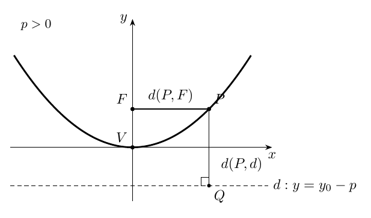
Figura 3. El foco está a distancia \(|p|\) del vértice; la directriz se encuentra a esa misma distancia, sobre el lado opuesto.
Continuidad con rectas y circunferencias
La clase compara tres escrituras. La recta \(y=mx\) adquiere la forma \(y-y_0=m(x-x_0)\) cuando pasa por un punto \((x_0,y_0)\); la circunferencia \(x^2+y^2=r^2\) se escribe \((x-x_0)^2+(y-y_0)^2=r^2\) cuando su centro se traslada; la parábola \(y=ax^2\) pasa a (1) cuando se traslada su vértice. La sustitución \((x,y)\mapsto(x-x_0,y-y_0)\) expresa la misma operación geométrica en los tres casos.
De la función cuadrática a su vértice
Completar cuadrados
Demostración de la cátedra (33:42–39:35), reconstruida. Sea \(a\ne0\) y considérese
\[ y=ax^2+bx+c. \]
Al factorizar \(a\) en los dos primeros términos, agregar y retirar el mismo cuadrado, obtenemos una cadena de igualdades:
\[ \begin{aligned} y&=a\left(x^2+\frac ba x\right)+c\\ &=a\left[x^2+2\frac{b}{2a}x+\left(\frac{b}{2a}\right)^2-\left(\frac{b}{2a}\right)^2\right]+c\\ &=a\left(x+\frac{b}{2a}\right)^2-\frac{b^2}{4a}+c. \end{aligned} \]
La expresión constante del último miembro contiene el discriminante \(\Delta=b^2-4ac\):
\[ \boxed{y=a\left(x+\frac{b}{2a}\right)^2-\frac{\Delta}{4a},\qquad\Delta=b^2-4ac.}\tag{3} \]
La comparación de (3) con (1) identifica las coordenadas del vértice:
\[ \boxed{x_0=-\frac{b}{2a},\qquad y_0=-\frac{\Delta}{4a}.}\tag{4} \]
La ecuación (3) muestra, además, que el eje de simetría es \(x=-b/(2a)\) y permite recuperar los datos focales mediante (2):
\[ \boxed{F=\left(-\frac b{2a},\frac{1-\Delta}{4a}\right),\qquad d:\ y=-\frac{\Delta+1}{4a}.}\tag{5} \]
La forma canónica y la ecuación desarrollada describen exactamente el mismo conjunto de puntos porque todas las transformaciones son igualdades algebraicas reversibles.
El discriminante en el gráfico de una cuadrática
En la cátedra (43:35–50:55). Los puntos donde la parábola corta el eje de las abscisas satisfacen \(y=0\), es decir, \(ax^2+bx+c=0\). Completando el cuadrado o aplicando la fórmula cuadrática se obtienen tres casos exclusivos:
| Discriminante | Intersecciones con el eje \(x\) | Lectura geométrica |
|---|---|---|
| \(\Delta>0\) | Dos puntos \(x_{1,2}=\dfrac{-b\pm\sqrt\Delta}{2a}\) | La parábola atraviesa el eje en dos abscisas. |
| \(\Delta=0\) | Un punto \(x_0=-\dfrac b{2a}\) | El vértice pertenece al eje horizontal. |
| \(\Delta<0\) | Conjunto vacío de intersecciones | La curva se mantiene del lado del eje que determina el signo de \(a\). |
Con \(a>0\), la función tiene su valor mínimo en el vértice. Si \(\Delta>0\), es positiva en \((-\infty,x_1)\cup(x_2,\infty)\) y negativa en \((x_1,x_2)\), suponiendo \(x_1<x_2\). Si \(\Delta<0\), es estrictamente positiva para todo \(x\). Si \(\Delta=0\), toma el valor cero en \(x_0\) y valores positivos en las restantes abscisas. Para \(a<0\), el vértice es máximo y las direcciones de las desigualdades se invierten.
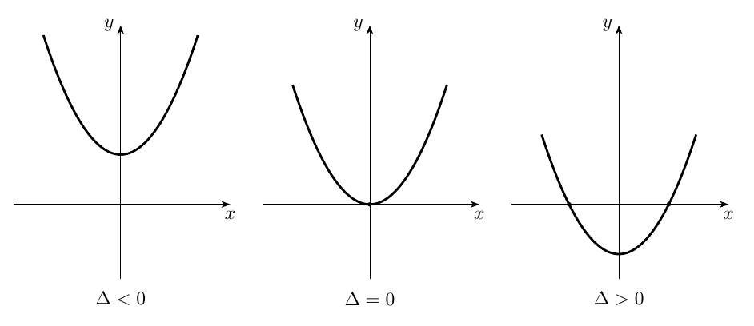
Figura 4. Para \(a>0\), los tres signos del discriminante corresponden respectivamente a dos, uno y cero puntos de corte con el eje horizontal.
Precisión de rigor. El discriminante se utiliza aquí para contar intersecciones y analizar signos, como hace el profesor en relación con el primer control. La fórmula del vértice explica geométricamente esas mismas propiedades: \(y_0=-\Delta/(4a)\).
Elipse e hipérbola desde un foco y una directriz
Planteamiento común
En la cátedra (59:58–1:11:20). En la segunda parte se consideran un foco \(F=(f,0)\) y una directriz vertical \(d:\ x=d\), donde la letra \(d\) designa ahora la abscisa constante de esa recta y se exige \(f\ne d\). Se fija una excentricidad \(e>0\) que satisface \(e\ne1\). Por definición, el punto \(P=(x,y)\) pertenece a la cónica exactamente cuando
\[ \boxed{d(P,F)=e\,d(P,d).} \]
Como las distancias y \(e\) son mayores o iguales que cero, se pueden elevar al cuadrado conservando la equivalencia:
\[ (x-f)^2+y^2=e^2(x-d)^2. \]
Al desarrollar los cuadrados y reagrupar los términos, se obtiene
\[ \boxed{(1-e^2)x^2+y^2+2(e^2d-f)x=e^2d^2-f^2.}\tag{6} \]
La parábola de excentricidad \(1\) ya fue estudiada en la Cátedra 4.1. En la sesión actual el coeficiente \(1-e^2\) permite distinguir elipse e hipérbola.
Elegir el origen de forma que desaparezca el término lineal
En la cátedra (1:11:32–1:19:00). El profesor utiliza una elección estratégica del origen: dispone los datos focales respecto del sistema de coordenadas de manera que
\[ \boxed{f=e^2d.}\tag{7} \]
Así desaparece el coeficiente de \(x\) en (6), y el centro de la cónica queda en el origen. Esta normalización es posible mediante una traslación cuando \(e\ne1\): si las coordenadas iniciales del foco y la directriz son \(f_{\mathrm{ini}}\) y \(d_{\mathrm{ini}}\), basta trasladar el origen a
\[ h=\frac{f_{\mathrm{ini}}-e^2d_{\mathrm{ini}}}{1-e^2}. \]
En las nuevas coordenadas \(f=f_{\mathrm{ini}}-h\) y \(d=d_{\mathrm{ini}}-h\), y por construcción \(f=e^2d\). Esta última fórmula para \(h\) es una demostración completada editorialmente de la posibilidad de elegir el origen que el profesor ilustra mediante dibujos.
Sustituyendo (7) en el segundo miembro de (6):
\[ e^2d^2-f^2=e^2d^2-e^4d^2=e^2d^2(1-e^2). \]
Por tanto,
\[ (1-e^2)x^2+y^2=e^2d^2(1-e^2). \]
Se deduce \(d\ne0\), pues \(d=0\) implicaría \(f=0\) e identificaría el foco con un punto de la directriz. Podemos dividir por cantidades distintas de cero y escribir
\[ \boxed{\frac{x^2}{e^2d^2}+\frac{y^2}{e^2d^2(1-e^2)}=1.}\tag{8} \]
En (8), la magnitud \(e^2d^2\) es estrictamente positiva. El signo del segundo denominador está determinado por \(1-e^2\).
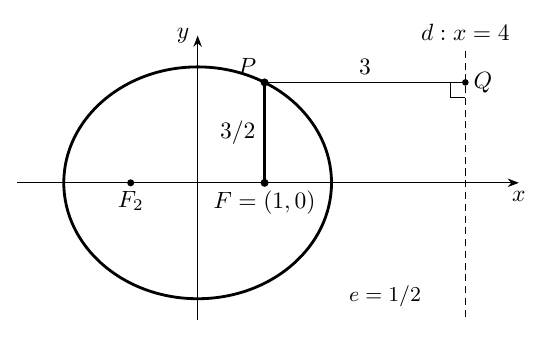
Figura 5. Una configuración con \(f=e^2d\), ilustrada para \(0<e<1\): las distancias se toman al foco y perpendicularmente a la directriz.
La elipse y sus parámetros
Ecuación canónica y semiejes
En la cátedra (1:21:29–1:29:35). Si \(0<e<1\), el número \(1-e^2\) es estrictamente positivo. Se definen los semiejes positivos
\[ \boxed{a=e|d|,\qquad b=e|d|\sqrt{1-e^2}=a\sqrt{1-e^2}.}\tag{9} \]
La ecuación (8) se convierte en
\[ \boxed{\frac{x^2}{a^2}+\frac{y^2}{b^2}=1,\qquad a>b>0.}\tag{10} \]
Este es el modelo de una elipse centrada en el origen, con eje mayor horizontal. Sus vértices sobre el eje horizontal son \((\pm a,0)\) y los extremos del eje menor son \((0,\pm b)\). La ecuación (10) implica \(|x|\le a\) y \(|y|\le b\), y es simétrica respecto de ambos ejes porque contiene las dos coordenadas elevadas al cuadrado.
La identidad pitagórica y la excentricidad
La relación \(b=a\sqrt{1-e^2}\) implica
\[ b^2=a^2(1-e^2)=a^2-a^2e^2. \]
En la normalización (7), \(f=e^2d\), por lo que \(|f|=ea\). Se obtiene así la relación que el profesor presenta mediante un triángulo rectángulo:
\[ \boxed{a^2=b^2+f^2,\qquad e=\frac{|f|}{a}=\frac{\sqrt{a^2-b^2}}a.}\tag{11} \]
En (11), \(|f|\) es la distancia desde el centro hasta cada foco. El semieje mayor \(a\) es la hipotenusa del triángulo cuyos catetos son \(b\) y \(|f|\).
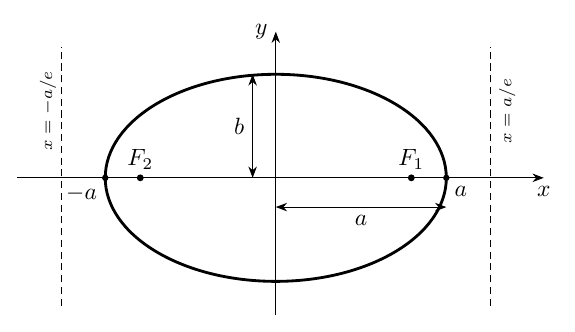
Figura 6. Elipse horizontal: los dos focos están en \((\pm|f|,0)\) y las directrices en \(x=\pm a/e\), equivalentes a \(x=\pm a^2/|f|\).
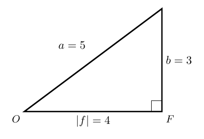
Figura 7. Interpretación pitagórica de \(a^2=b^2+|f|^2\); en el esquema se usa la proporción numérica \(3\)–\(4\)–\(5\).
Los dos focos y las dos directrices
En la cátedra (1:31:25–1:33:54). La magnitud del parámetro focal satisface \(|f|=ae\). Como la elipse es simétrica respecto del eje vertical, ambos puntos
\[ F_1=(ae,0),\qquad F_2=(-ae,0) \]
son sus focos. De (9) resulta \(|d|=a/e\), por lo que tiene dos directrices verticales:
\[ \boxed{x=\frac ae\qquad\text{y}\qquad x=-\frac ae.}\tag{12} \]
Ampliación editorial — verificación directa. Partiendo de (10), se obtiene \(y^2=b^2(1-x^2/a^2)\). Tomemos \(f=ae\) y \(d=a/e\). Entonces, para cualquier punto de la elipse,
\[ \begin{aligned} (x-f)^2+y^2 &=x^2-2aex+a^2e^2+a^2(1-e^2)-x^2(1-e^2)\\ &=e^2x^2-2aex+a^2=(ex-a)^2\\ &=e^2\left(x-\frac ae\right)^2. \end{aligned} \]
Las distancias son no negativas, así que \(d(P,F_1)=e\,d(P,x=a/e)\). El reemplazo \((x,y)\mapsto(-x,y)\) demuestra la segunda configuración focal.
La hipérbola: desarrollo algebraico complementario
En la cátedra (1:21:40–1:24:05). El profesor obtiene la diferencia esencial en el signo: si \(e>1\), el número \(1-e^2\) es negativo. Su exposición establece la forma con un término positivo y otro negativo y deja las propiedades completas de la hipérbola para la lectura del apunte.
Ampliación editorial. Definimos los parámetros positivos
\[ a=e|d|,\qquad b=a\sqrt{e^2-1}. \]
Reescribiendo (8) como diferencia de cuadrados se obtiene
\[ \boxed{\frac{x^2}{a^2}-\frac{y^2}{b^2}=1.}\tag{13} \]
La ecuación describe dos ramas simétricas con vértices \((a,0)\) y \((-a,0)\). De (13) se sigue \(|x|\ge a\), por lo que la rama derecha tiene \(x\ge a\) y la izquierda \(x\le-a\). Las rectas
\[ \boxed{y=\pm\frac ba x} \]
son las asíntotas, en el sentido de que las ramas se aproximan a ellas cuando \(|x|\) crece. Una verificación algebraica se obtiene despejando
\[ y=\pm\frac ba\sqrt{x^2-a^2},\qquad |x|\ge a, \]
y comparando \(\sqrt{x^2-a^2}\) con \(|x|\) para valores grandes de \(|x|\).
La distancia focal es \(|f|=ae\) y satisface
\[ \boxed{f^2=a^2+b^2,\qquad e=\frac{|f|}{a}=\sqrt{1+\frac{b^2}{a^2}}.}\tag{14} \]
Los focos se ubican en \((\pm|f|,0)\) y las directrices en \(x=\pm a/e\).
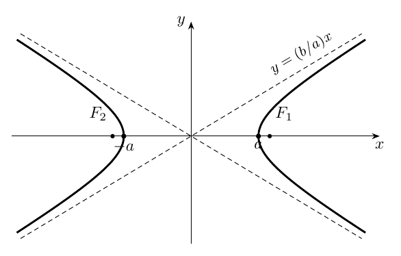
Figura 8. Hipérbola horizontal con dos ramas, vértices, focos y asíntotas oblicuas; figura de ampliación editorial.
Cuadro de relaciones para elipse e hipérbola
| Propiedad | Elipse horizontal | Hipérbola horizontal |
|---|---|---|
| Excentricidad | \(0<e<1\) | \(e>1\) |
| Ecuación | \(x^2/a^2+y^2/b^2=1\) | \(x^2/a^2-y^2/b^2=1\) |
| Semiejes | \(a>b>0\) | \(a,b>0\) |
| Distancia focal | \(|f|=\sqrt{a^2-b^2}\) | \(|f|=\sqrt{a^2+b^2}\) |
| Focos | \((\pm |f|,0)\) | \((\pm |f|,0)\) |
| Directrices | \(x=\pm a/e\) | \(x=\pm a/e\) |
| Excentricidad desde semiejes | \(e=\sqrt{1-b^2/a^2}\) | \(e=\sqrt{1+b^2/a^2}\) |
Precisión terminológica. En las secciones de elipse e hipérbola, \(a\) y \(b\) designan longitudes positivas de semiejes. En la ecuación cuadrática de la parábola, \(a\) designa el coeficiente principal. Cada significado queda fijado por el contexto de su sección.
Preguntas de cierre, rigor y continuidad
La exposición termina el desarrollo de elipses y remite al apunte para las propiedades de la hipérbola. En las preguntas finales, el profesor retoma el ejercicio clásico del lugar geométrico de los puntos desde los que dos segmentos hacia puntos fijos forman un ángulo recto: la circunferencia que tiene por diámetro el segmento que une los puntos fijos. Su centro es el punto medio y su radio es la mitad de la distancia entre ambos extremos. Esta observación pertenece a la sección de consultas, posterior a la exposición principal sobre cónicas, y conecta con la tercera clase de ejercicios de geometría analítica.
Puntos a comprobar al estudiar: las formas \(y-y_0=a(x-x_0)^2\) y \(y=ax^2+bx+c\) se relacionan por una igualdad algebraica; las expresiones del foco y la directriz dependen de \(p=1/(4a)\); el discriminante cuenta los cortes reales con el eje horizontal; la ecuación \(f=e^2d\) corresponde a un origen elegido para centrar elipse e hipérbola; el signo de \(1-e^2\) selecciona la ecuación de cada cónica; los focos y las directrices aparecen por pares simétricos en la normalización de centro en el origen.
Fuente y procedencia. Jorge San Martín, «IC2021: Cátedra 4.2. Viernes 12:00», YouTube, video E2KL0qm2vIg. Se ha revisado la transcripción automática en español de la grabación completa, incluidas las preguntas finales. La letra «hipérbola» se emplea en los apartados donde el reconocimiento automático presenta variantes fonéticas; las fórmulas se normalizan y se han comprobado mediante sustitución. Las figuras y los dieciséis ejercicios resueltos son elaboración editorial para el estudio.
Continuación: elipse e hipérbola completan la introducción de la semana 4. El siguiente bloque puede estudiar sus aplicaciones, ecuaciones trasladadas y problemas geométricos, manteniendo las relaciones focales y la lectura algebraica aprendida aquí.
Taller de problemas y soluciones
Los ejercicios se presentan a continuación según la fuente de origen; las ampliaciones editoriales de cada apuntes permanecen expresamente identificadas.
Ejercicios de consolidación y solucionario — cátedra 4.1
Los problemas E1–E14 son ampliaciones originales para el estudio. Algunos reproducen los ejemplos numéricos de la clase y otros examinan las hipótesis que se utilizan al calcular intersecciones y tangentes. Se proporciona inmediatamente una solución razonada de cada uno.
E1. Excentricidad y distancias
Si \(e=1/2\) y la distancia a la directriz de un punto de la cónica es \(12\), determinar la distancia al foco. Repetir para \(e=1\) y \(e=3\).
Solución. La definición exige \(d(P,F)=e\,d(P,d)\). En consecuencia, las distancias al foco son \(6\), \(12\) y \(36\), respectivamente. Los tres valores corresponden a una elipse, una parábola y una hipérbola para las configuraciones admitidas.
E2. Foco y directriz a partir de la ecuación
Determinar el foco, la directriz, el vértice y la apertura de \(y^2=12x\).
Solución. Comparar con \(y^2=4px\) da \(4p=12\), luego \(p=3\). El foco es \((3,0)\), la directriz \(x=-3\) y el vértice \((0,0)\). Como \(p>0\), la curva se abre hacia la derecha.
E3. Parábola horizontal de parámetro negativo
Analizar \(y^2=-8x\).
Solución. La igualdad \(4p=-8\) conduce a \(p=-2\). Su foco es \((-2,0)\) y su directriz es \(x=2\). Todo punto satisface \(-8x=y^2\ge0\), por lo que \(x\le0\): se abre hacia la izquierda. El eje de simetría es \(y=0\).
E4. Pertenencia y simetría
Determinar si \((2,4)\) y \((2,-4)\) pertenecen a \(y^2=8x\).
Solución. Para ambos puntos, \(y^2=16\) y \(8x=16\). Son puntos de la parábola y constituyen un par simétrico respecto del eje horizontal. En cambio, \((1,4)\) produce \(16\) frente a \(8\) y queda fuera del lugar.
E5. Una recta horizontal
Calcular la intersección de \(y=3\) con \(y^2=8x\).
Solución. Sustituyendo \(y=3\) se obtiene \(9=8x\); la única solución es \(x=9/8\). El punto de corte es \((9/8,3)\). Una recta horizontal corta este lugar exactamente una vez.
E6. Dos secantes de distinta posición
Para \(y^2=4x\) estudiar las rectas \(y=x\) y \(y=x+2\).
Solución. La primera produce \(x^2=4x\), equivalente a \(x(x-4)=0\), de donde \(x=0\) o \(x=4\); los puntos de corte son \((0,0)\) y \((4,4)\). La segunda da \((x+2)^2=4x\), es decir \(x^2+4=0\), cuyo miembro izquierdo es estrictamente positivo. Por ello su conjunto de intersecciones es vacío.
E7. Tangente por el método del discriminante
Decidir si \(y=x+1\) es tangente a \(y^2=4x\) y hallar el contacto.
Solución. Se tiene \(p=1\), \(m=1\), \(n=1\). Como \(mn=p\), el discriminante vale cero. De las fórmulas \(x_0=p/m^2\) y \(y_0=2p/m\) se obtiene \((x_0,y_0)=(1,2)\). Comprobación: \((x+1)^2=4x\) equivale a \((x-1)^2=0\).
E8. Una recta que corta dos veces
Determinar las intersecciones de \(y=x+1\) con \(y^2=8x\).
Solución. Sustituimos para obtener \((x+1)^2=8x\), o \(x^2-6x+1=0\). Su discriminante es \(36-4=32>0\); las raíces son \(x=3\pm2\sqrt2\). La ordenada correspondiente es \(y=x+1=4\pm2\sqrt2\). Los dos puntos son distintos, como predice \(16p(p-mn)=16\cdot2(2-1)>0\).
E9. Tangente en un punto conocido
Encontrar la tangente a \(y^2=8x\) en \((2,4)\).
Solución. Primero verificamos pertenencia: \(4^2=16=8\cdot2\). Con \(p=2\), la fórmula desdoblada es \(4y=4(x+2)\); por tanto \(\boxed{y=x+2}\). La recta contiene \((2,4)\) y al sustituirse en la parábola produce \((x-2)^2=0\).
E10. Tangente en el vértice
Hallar la tangente a \(y^2=-12x\) en el origen.
Solución. La forma desdoblada es \(yy_0=2p(x+x_0)\). En \((0,0)\) queda \(0=2px\). Como \(p=-3\), resulta \(\boxed{x=0}\). La recta es vertical; al intersectarla con la parábola se obtiene \(y^2=0\), con única raíz doble \(y=0\).
E11. Parábola de eje vertical
Determinar foco, directriz y sentido de apertura de \(x^2=-12y\).
Solución. Es \(4p=-12\), luego \(p=-3\). El foco es \((0,-3)\); la directriz, \(y=3\); el vértice, \((0,0)\). Como \(x^2=-12y\ge0\), se tiene \(y\le0\) y la apertura es hacia abajo.
E12. Tangente a una parábola vertical
Encontrar la tangente a \(x^2=4y\) en \((2,1)\).
Solución. El punto verifica \(2^2=4\cdot1\). Con \(p=1\), la desdoblada es \(2x=2(y+1)\). Al simplificar queda \(\boxed{y=x-1}\). La sustitución en \(x^2=4y\) da \(x^2=4(x-1)\) y, por tanto, \((x-2)^2=0\).
E13. Tangente a una circunferencia mediante desdoblada
Sea \(\mathcal C:x^2+y^2-2x=0\). Encontrar la tangente en \((2,0)\).
Solución. Verificación de pertenencia: \(2^2+0^2-2(2)=0\). Aplicamos la regla: \(xx_0+yy_0-(x+x_0)=0\). En el punto indicado, \(2x-(x+2)=0\), de donde \(\boxed{x=2}\). Es la recta vertical por el extremo derecho de la circunferencia de centro \((1,0)\) y radio \(1\).
E14. El parámetro y la degeneración
Analizar qué describe la ecuación formal \(y^2=4px\) si se fija \(p=0\).
Solución. La ecuación queda \(y^2=0\), equivalente a \(y=0\): una recta de multiplicidad algebraica dos. La construcción de la parábola de esta clase exige \(p\ne0\), pues así el foco \(F=(p,0)\) queda separado de la directriz \(x=-p\). El caso \(p=0\) muestra por qué debe preservarse esta hipótesis al utilizar las fórmulas canónicas.
Ejercicios de estudio y soluciones desarrolladas — cátedra 4.2
Las siguientes actividades son una ampliación editorial. Retoman los cálculos y situaciones geométricas presentados durante la clase, incorporan aplicaciones numéricas y completan el estudio introductorio de la hipérbola. Se distinguen de los ejemplos concretos pronunciados por el profesor.
E1. Parábola \(y=x^2\)
Enunciado. Determinar vértice, foco y directriz.
Solución. Al comparar con \(y=ax^2\) se identifica \(a=1\). Por la relación \(p=1/(4a)\), \(p=1/4>0\). El vértice es \((0,0)\), el foco \((0,1/4)\) y la directriz \(y=-1/4\). La ecuación en forma focal es \(x^2=4(1/4)y=y\). La apertura es hacia arriba.
E2. Parábola \(y=-2x^2\)
Enunciado. Hallar los elementos focales e interpretar su orientación.
Solución. Aquí \(a=-2\) y \(p=1/(4(-2))=-1/8\). El vértice es el origen, el foco es \((0,-1/8)\) y la directriz la horizontal \(y=1/8\). El signo negativo de \(p\) expresa apertura hacia abajo, con distancias focal y directriz iguales a \(1/8\) desde el vértice.
E3. Parábola horizontal \(y^2=-12x\)
Enunciado. Determinar el foco y la directriz.
Solución. La comparación con \(y^2=4px\) da \(4p=-12\) y \(p=-3\). Por tanto, foco \((-3,0)\) y directriz \(x=3\). El eje de simetría es \(y=0\) y la parábola se abre hacia la izquierda.
E4. Parábola \(x^2=8y\)
Enunciado. Calcular sus parámetros.
Solución. De \(4p=8\) se deduce \(p=2\). El foco es \((0,2)\), la directriz es \(y=-2\), el vértice es \((0,0)\) y el eje de simetría es el eje \(y\). Para verificar un punto, \((4,2)\) satisface \(4^2=8\cdot2\).
E5. Foco de una parábola trasladada
Enunciado. Hallar vértice, foco y directriz de \(y=2(x-3)^2-1\).
Solución. La ecuación presenta directamente el vértice \(V=(3,-1)\) y el coeficiente \(a=2\). El parámetro es \(p=1/(4a)=1/8\). A la ordenada del vértice se suma \(p\) para el foco y se resta \(p\) para la directriz: \(F=(3,-7/8)\) y \(d:y=-9/8\).
E6. Traslación de \(y=x^2\)
Enunciado. Estudiar la parábola \(y=(x+1)^2+4\).
Solución. Escribiendo \((x+1)^2=(x-(-1))^2\) se identifica \(V=(-1,4)\), \(a=1\) y \(p=1/4\). El foco es \((-1,17/4)\), la directriz es \(y=15/4\) y el eje es \(x=-1\). La curva conserva la apertura hacia arriba de \(y=x^2\) y se traslada una unidad a la izquierda y cuatro hacia arriba.
E7. Completar cuadrados
Enunciado. Analizar \(y=2x^2-8x+5\).
Solución. Factorizando el coeficiente principal e introduciendo el cuadrado adecuado:
\[ \begin{aligned} y&=2(x^2-4x)+5\\ &=2[(x-2)^2-4]+5\\ &=2(x-2)^2-3. \end{aligned} \]
El vértice es \((2,-3)\); como \(p=1/8\), el foco es \((2,-23/8)\) y la directriz \(y=-25/8\). También \(\Delta=(-8)^2-4(2)(5)=24\), y la fórmula \(-\Delta/(4a)=-24/8=-3\) confirma la ordenada del vértice.
E8. Parábola abierta hacia abajo
Enunciado. Completar cuadrados en \(y=-x^2+4x-1\).
Solución.
\[ y=-(x^2-4x)-1=-[(x-2)^2-4]-1=-(x-2)^2+3. \]
El vértice es \((2,3)\), el eje \(x=2\) y \(p=1/(4(-1))=-1/4\). Se obtiene el foco \((2,11/4)\) y la directriz \(y=13/4\). El vértice es un máximo por ser negativo el coeficiente del cuadrado.
E9. Dos raíces y mínimo
Enunciado. Hallar los cortes con el eje \(x\) y el vértice de \(y=x^2-6x+8\).
Solución. El trinomio factoriza como \((x-2)(x-4)\), así que las raíces son \(x_1=2\) y \(x_2=4\). Además,
\[ y=(x-3)^2-1. \]
El vértice es \((3,-1)\) y \(\Delta=36-32=4>0\). El trinomio toma valores negativos exactamente en \((2,4)\) y positivos fuera del intervalo cerrado \([2,4]\); en \(2\) y \(4\) vale cero.
E10. Cuadrática de coeficiente negativo
Enunciado. Analizar el signo de \(-x^2+2x+3\).
Solución. Multiplicar la ecuación \(-x^2+2x+3=0\) por \(-1\) produce \(x^2-2x-3=0=(x-3)(x+1)\). Sus ceros son \(-1\) y \(3\). Como el coeficiente principal es negativo, la cuadrática es positiva para \(-1<x<3\) y negativa para \(x<-1\) y \(x>3\). La forma canónica es \(-(x-1)^2+4\), cuyo vértice \((1,4)\) confirma el máximo.
E11. Elipse de semiejes 5 y 3
Enunciado. Para \(x^2/25+y^2/9=1\), hallar distancia focal, excentricidad y directrices.
Solución. Identificamos \(a=5\), \(b=3\). La identidad pitagórica da \(|f|=\sqrt{a^2-b^2}=\sqrt{25-9}=4\). Por tanto, \(e=4/5\), los focos están en \((\pm4,0)\) y las directrices en \(x=\pm a/e=\pm25/4\). Los vértices son \((\pm5,0)\) y los extremos del eje menor \((0,\pm3)\).
E12. Elipse con excentricidad \(1/2\)
Enunciado. Hallar los focos y directrices de \(x^2/16+y^2/12=1\).
Solución. Tomamos \(a=4\) y \(b=\sqrt{12}=2\sqrt3\). Entonces \(|f|=\sqrt{16-12}=2\), de donde \(e=|f|/a=1/2\). Los focos son \((\pm2,0)\) y las directrices \(x=\pm8\). La igualdad \(a^2=b^2+f^2\) se comprueba como \(16=12+4\).
E13. Elipse desde foco y directriz
Enunciado. Fijar \(F=(3,0)\), directriz \(x=12\) y excentricidad \(e=1/2\). Determinar la cónica.
Solución. Se cumple \(f=e^2d=(1/4)(12)=3\), de modo que el sistema ya está centrado. Las constantes son \(a=e|d|=(1/2)(12)=6\) y \(b=a\sqrt{1-e^2}=6\sqrt{3/4}=3\sqrt3\). La ecuación buscada es
\[ \boxed{\frac{x^2}{36}+\frac{y^2}{27}=1.} \]
Sus otros elementos focales son \(F_2=(-3,0)\) y la directriz \(x=-12\).
E14. Hipérbola pitagórica 3–4–5
Enunciado. Analizar \(x^2/9-y^2/16=1\).
Solución. Los parámetros son \(a=3\), \(b=4\). La distancia focal vale \(|f|=\sqrt{a^2+b^2}=5\) y la excentricidad \(e=5/3>1\). Los focos están en \((\pm5,0)\), los vértices en \((\pm3,0)\) y las directrices en \(x=\pm a/e=\pm9/5\). Las asíntotas son \(y=\pm(4/3)x\).
E15. Hipérbola construida desde una excentricidad
Enunciado. Una hipérbola centrada en el origen tiene focos \((\pm4,0)\) y excentricidad \(e=2\). Hallar su ecuación.
Solución. Como \(e=|f|/a\), obtenemos \(a=4/2=2\). De \(f^2=a^2+b^2\) se sigue \(b^2=16-4=12\). La ecuación es
\[ \boxed{\frac{x^2}{4}-\frac{y^2}{12}=1.} \]
Sus vértices son \((\pm2,0)\) y sus directrices \(x=\pm a/e=\pm1\).
E16. Verificación de la ecuación focal de una elipse
Enunciado. Verificar que \((x,y)=(1,3/2)\) satisface la razón de distancias de la elipse con \(F=(1,0)\), directriz \(x=4\) y \(e=1/2\).
Solución. La distancia al foco es
\[ d(P,F)=\sqrt{(1-1)^2+(3/2)^2}=\frac32. \]
La distancia a la directriz vertical es \(d(P,d)=|1-4|=3\). Multiplicar por la excentricidad produce \(e\,d(P,d)=(1/2)3=3/2\), exactamente la distancia al foco. Además, \(f=e^2d=1\), y la elipse asociada tiene \(a=2\), \(b=\sqrt3\) y ecuación \(x^2/4+y^2/3=1\). Al sustituir el punto se obtiene \(1/4+(9/4)/3=1/4+3/4=1\), segunda verificación independiente.
Este capítulo pertenece a la edición temática no oficial del curso IC2021. Índice del libro · Fuentes y concordancia.